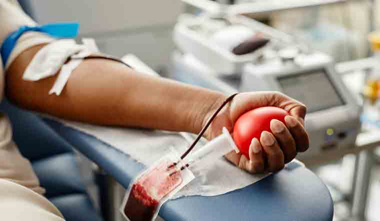

Why Donate Blood?
Blood donation is a noble act that can save lives. Every two seconds, someone in need requires blood. Donating blood is safe, simple, and helps people suffering from various conditions such as anemia, cancer, trauma, and surgeries.
Benefits of Donating Blood
- Helps save up to three lives with one donation.
- Stimulates blood cell production.
- Improves heart health and reduces harmful iron stores.
- Free health screening during donation.
- Gives you a sense of purpose and community contribution.

Who Can Donate?
- Anyone between 18 and 65 years of age
- Weighs at least 50 kg
- In general good health
- No recent major illness or surgery
Become a Hero Today
If you meet the eligibility, register now and join our community of life-savers. Your one step can mean the world to someone in need.